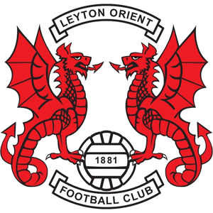
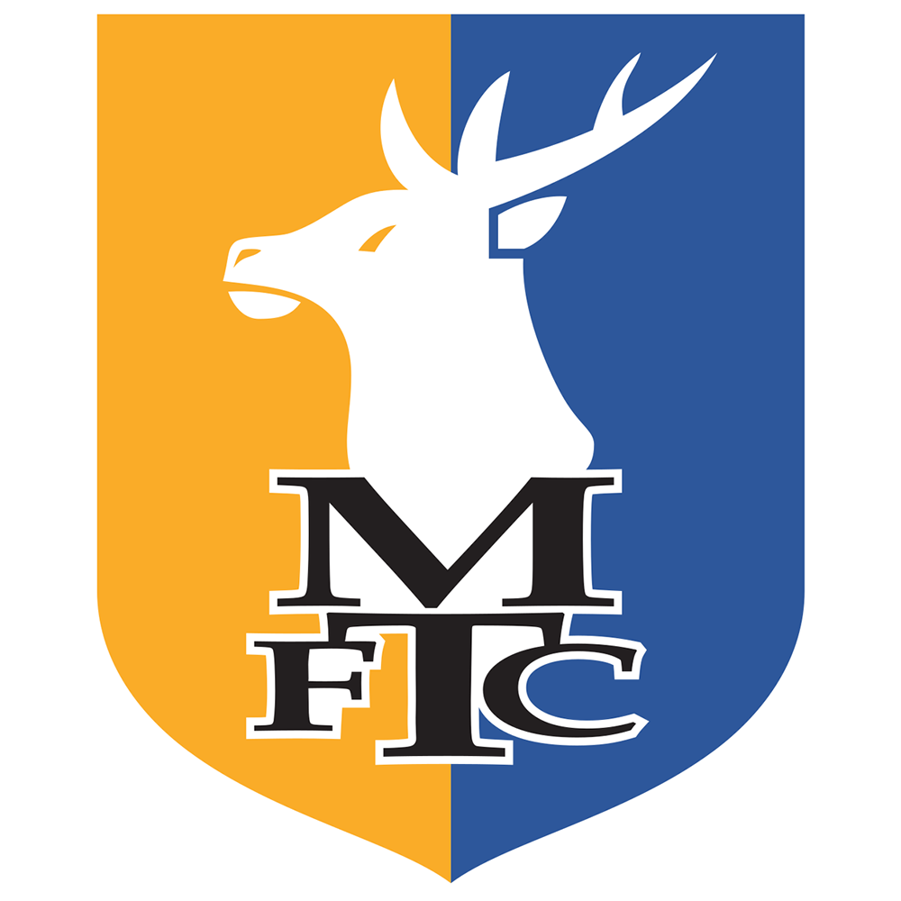

斯托克波特郡 vs 雷丁
比赛详情
场地：埃奇利公园球场 · 未开始
前往俱乐部官网 ↗剑桥联 vs 斯托克波特郡
比赛详情
场地：克莱达拉修道院球场 · 未开始
前往俱乐部官网 ↗
斯托克波特郡 vs 莱顿东方
比赛详情
场地：埃奇利公园球场 · 未开始
前往俱乐部官网 ↗
曼斯菲尔德城 vs 斯托克波特郡
比赛详情
场地：一呼球场 · 未开始
前往俱乐部官网 ↗雷丁 vs 斯托克波特郡
比赛详情
场地：精选汽车租赁球场 · 未开始
前往俱乐部官网 ↗